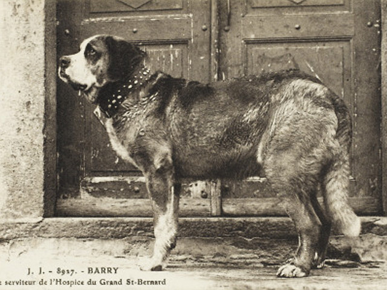

Barry
La primera mención de un perro en los archivos del Gran Hospicio de San Bernardo fue en 1707 que simplemente decía "Un perro fue enterrado por nosotros". Se cree que los perros fueron introducidos al monasterio como perros guardianes en algún momento entre 1660 y 1670. Cráneos de la colección del Museo de Historia Natural de Berna muestran que por lo menos dos tipos de perros vivieron en el hospicio. Para 1800, el año en que Barry nació, se sabía que un tipo especial de perro era utilizado para trabajos de rescate en el paso de montaña. Esta variedad general era conocida como Küherhund, o perro de ganado.
Las medidas de su cuerpo preservado muestran que Barry era más pequeño que los San Bernardos modernos, con un peso entre 40 y 45 kilogramos, mientras que los San Bernardos modernos pesan entre 65 y 85 kg. Su altura en estado preservado es de aproximadamente 64 centímetros, pero mientras Barry estaba vivo su altura debió ser algo menor.
Durante su carrera, a Barry se le acreditó con salvar las vidas de más de cuarenta personas, aunque este número ha variado algunas veces con el paso de los años. El rescate más famoso de Barry fue el de un joven muchacho. Encontró al niño durmiendo en una caverna de hielo. Después de calentar al cuerpo del niño lo suficiente lamiéndolo, movió al muchacho sobre su lomo y llevó al niño de vuelta al hospicio. El niño sobrevivió y fue regresado a sus padres, aunque algunas fuentes indican que su madre murió en la avalancha que había atrapado al niño. El Museo de Historia Natural de Berna disputa esta leyenda, atribuida a Peter Scheitlin, un psicólogo de animales
Según una placa en un monumento en el cementerio de mascotas Cimetière des Chiens, la cual dice "Il sauva la vie à 40 personnes. Il fut tué par le 41ème", Barry salvó la vida de cuarenta personas, pero murió tratando de salvar a la número cuarenta y uno. La historia cuenta que un soldado suizo estaba perdido en las montañas. Barry estaba buscando por el soldado y había encontrado su olor después de 48 horas y finalmente se detuvo ante un banco de hielo grande. Cavó hasta encontrar al soldado, y luego lo lamió como estaba entrenado. Al despertarse asustado, el soldado suizo confundió a Barry con un lobo y lo hirió fatalmente con su bayoneta. En su libro de 1906, The Dog Book, James Watson atribuyó el rumor a su colega escritor Idstone, también conocido como el Reverendo Thomas Pearce.
Sin embargo, la leyenda sobre su muerte no es cierta. Después de doce años de servicio en el monasterio, Barry fue llevado por un monje a Berna, Suiza, para que pueda vivir el resto de su vida. Murió a sus 14 años. Su cuerpo fue entregado al Museo de Historia Natural de Berna. Se preparó una exhibición especial en su honor en el museo para conmemorar su 200º aniversario.